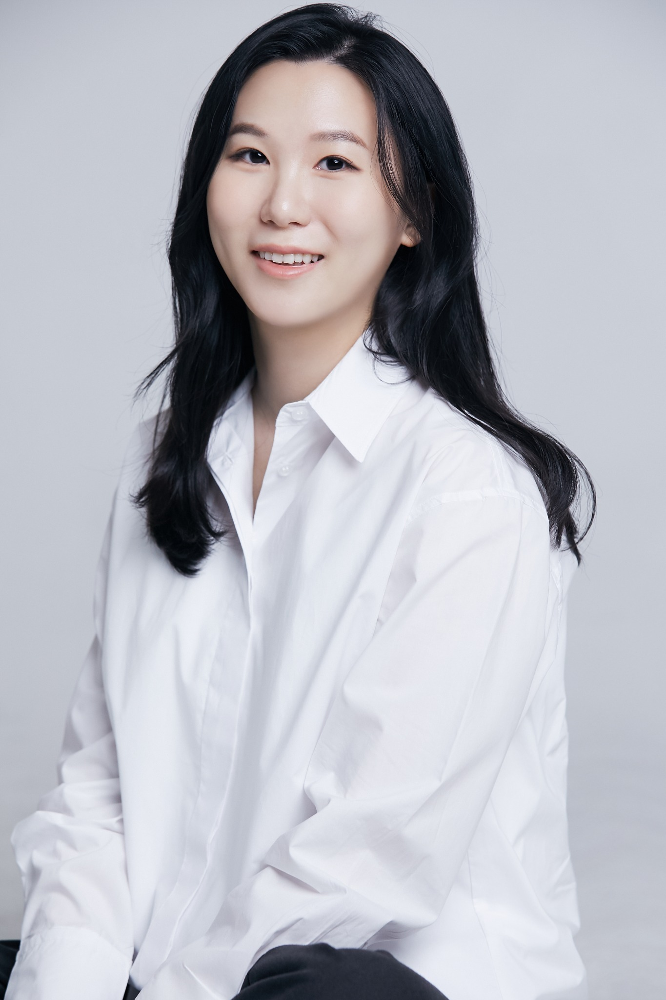

Personal Website / Seoul
Catherine
Chang.
장현아
디자인과 사람, 그리고 일상 속 새로운 배움에 관심을 두고 살아갑니다.
LinkedIn ↗SCROLL TO EXPLORE ↓

01 / About Me
A little
about me.
안녕하세요, 장현아입니다.
저는 사람들의 일상에 자연스럽게 스며드는 좋은 경험을 만드는 일에 관심이 있습니다. 디자인을 단순한 결과물이 아니라, 사람과 비즈니스를 연결하는 과정이라고 생각합니다.
새로운 것을 배우고, 다른 관점을 만나고, 일과 삶에서 의미 있는 질문을 발견하는 시간을 좋아합니다.
02 / Career
What I do.
PRODUCT DESIGN & LEADERSHIP
Design Director
Coupang · WOW Membership
프로덕트 디자인과 디자인 조직의 리더십을 통해 사용자 경험과 비즈니스의 성장을 함께 고민하고 있습니다. 복잡한 문제를 단순하고 직관적인 경험으로 바꾸는 과정에 가치를 둡니다.
Product DesignUX StrategyDesign Leadership
03 / Beyond Work
Beyond
the screen.
일 밖에서도 저는 끊임없이 배우고 발견하는 사람이고 싶습니다.
여행에서 새로운 풍경을 만나고, 책과 대화에서 다른 시선을 배우고, 소소한 일상에서 영감을 얻습니다. 이곳에는 그런 순간들을 조금씩 기록해 보려고 합니다.
TravelLearningEveryday Inspiration